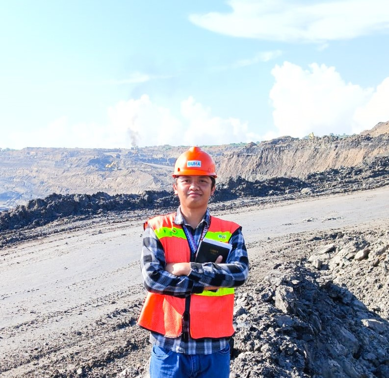

Apa itu K3: Keselamatan dan Kesehatan Kerja di Perusahaan
Materi 1

M Saefudin Khamid
Mahasiswa D4 K3 Universitas Sebelas Maret
Apa itu K3 ?
Menurut Peraturan Pemerintah Nomor 50 Tahun 2012, pengertian keselamatan dan kesehatan kerja atau K3 adalah segala kegiatan untuk menjamin dan melindungi keselamatan dan kesehatan tenaga kerja melalui upaya pencegahan kecelakaan kerja dan penyakit akibat kerja.
Urgensi K3
Pentingnya Penerapan Keselamatan dan Kesehatan Kerja. Keselamatan dan Kesehatan Kerja (K3) merupakan upaya kita untuk menciptakan lingkungan kerja yang sehat dan aman, sehingga dapat mengurangi probabilitas kecelakaan kerja atau penyakit akibat kelalaian yang mengakibatkan demotivasi dan defisiensi produktivitas kerja.
Tujuan K3
Berdasarkan UU No. 1 Tahun 1970 tentang keselamatan kerja, bahwa tujuan Kesehatan dan Keselamatan Kerja (K3) yang berkaitan dengan mesin, peralatan, landasan tempat kerja dan lingkungan tempat kerja adalah untuk mencegah terjadinya kecelakaan dan sakit akibat kerja, memberikan perlindungan pada sumber-sumber produksi sehingga dapat meningkatkan efisiensi dan produktivitas. Hal ini tentu sangat penting mengingat apabila kesehatan pegawai buruk maka akan mengakibatkan turunnya output serta demotivasi kerja.
Manfaat K3
Salah satunya adalah meningkatkan kesehatan dan keselamatan karyawan. Dengan menerapkan K3, karyawan dapat terhindar dari risiko kecelakaan dan penyakit akibat kerja. Selain itu, penerapan K3 juga dapat meningkatkan produktivitas karyawan. Karyawan yang sehat dan merasa aman di tempat kerja akan lebih produktif dan bersemangat dalam bekerja. Penerapan K3 juga dapat membantu perusahaan mengurangi risiko kerugian finansial. Dengan mencegah terjadinya kecelakaan kerja dan penyakit akibat kerja, perusahaan dapat menghemat biaya perawatan medis dan ganti rugi. Selain itu, dengan lingkungan kerja yang sehat dan aman, perusahaan dapat meningkatkan reputasi dan citra baik di mata masyarakat.
Ruang Lingkup K3
Lingkungan Kerja
Merupakan lokasi tempat para pekerja melakukan aktivitas kerja. Kondisi lingkungan kerja seperti ventilasi, penerangan, dan situasi haruslah memadai untuk meminimalisir potensi terjadinya kecelakaan kerja. Misalnya, penerangan yang kurang terang dapat berdampak buruk pada kesehatan mata para pekerja.
Alat dan Bahan Kerja
Alat-alat kerja dan bahan yang digunakan dalam proses produksi juga mempengaruhi keselamatan dan kesehatan para pekerja. Perlengkapan dan kelayakan alat kerja serta bahan-bahan yang berkaitan dengan produktivitas harus sesuai dengan peraturan keselamatan yang berlaku. Penggunaan bahan kimia dalam proses tertentu mengharuskan pekerja menggunakan alat keselamatan untuk meminimalisir potensi bahaya.
Metode Kerja
Metode kerja atau prosedur kerja merupakan standar kerja yang harus dilakukan oleh pekerja. Pembuatan Standar Operasional Prosedur (SOP) pada suatu perusahaan memuat segala aturan agar pekerjaan terlaksana secara efektif dan efisien. Beberapa batas maksimum pekerjaan atau jam kerja dalam sehari juga diatur untuk meminimalisir potensi risiko pada kesehatan pekerja.
Komitmen K3
Komitmen K3 merupakan bentuk kesanggupan dan kesungguhan top management dan pekerja terhadap upaya untuk menihilkan deviasi atau mengendalikan kerugian, utamanya pada manusia dan lingkungan.
Keselamatan dan Kesehatan Kerja adalah Tanggung Jawab Bersama, Zero Accident adalah Tujuan Kita Bersama.
Silahkan simak video di bawah ini !
Masuk ke Quiz K3
Sudah selesai Belajar ? Kerjakan Quiz di bawah ini !